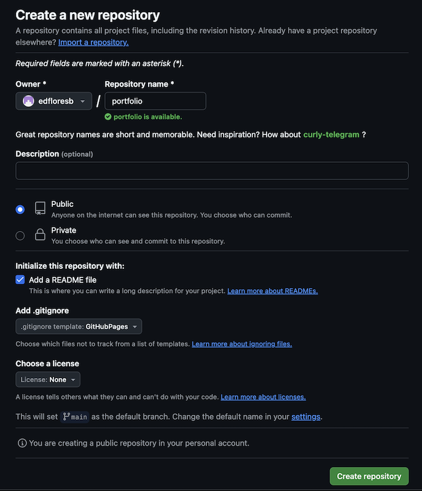
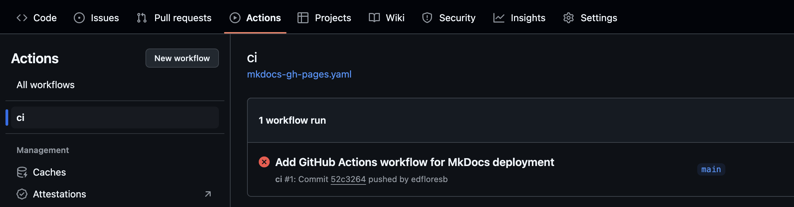
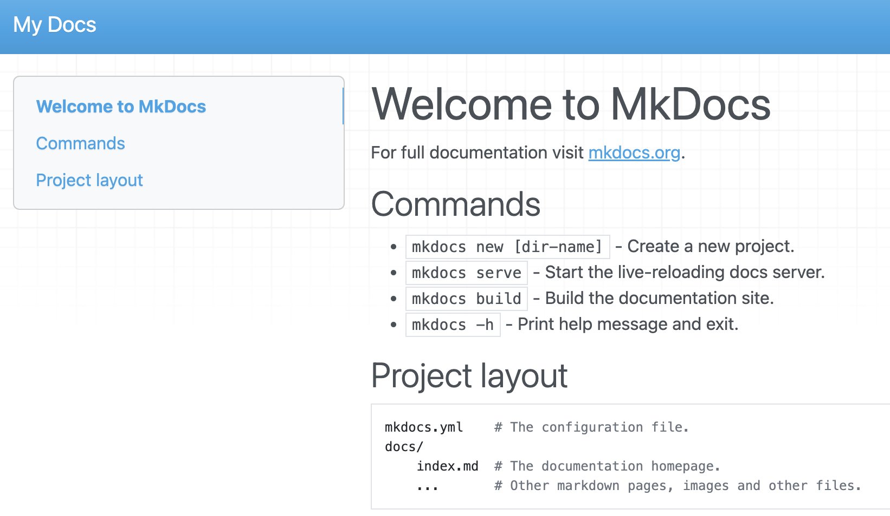
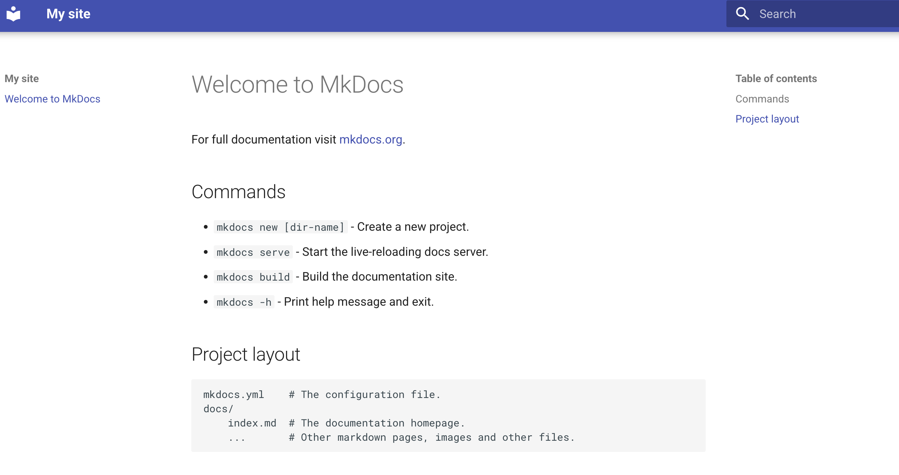

Material for Mkdocs on Github Pages
I will walk you through the steps to deploy a site like this on GitHub Pages!
GitHub Pages is a great way to host static sites for free. In this guide, you'll learn how to set up a site using MkDocs, a static site generator tailored for documentation, and automate deployment using GitHub Actions.
Prerequisites
Before we begin, ensure you have the following installed:
- Git
- Python
- MkDocs and mkdocs-material theme
- A GitHub repository
Create and Config Your GitHub Repository .
- Go to GitHub and log in to your account.
- Click on New repository.
- Name your repository (e.g., portfolio).
- Select Public as it is mandatory for Github pages.
- Check Add a README file.
- Check Add a .gitignore, select GitHubPages.
- Click Create repository.
 - Clone the repository to your local machine:
Setup your worflow
To set up a GitHub Actions workflow, follow these steps:
- Create the Workflow Directory
Navigate to your local repository.
Create the workflows directory if it doesn't already exist:
- Create the Workflow File Inside the workflows directory, create a YAML file for your workflow. Your repo should look like this
- Define the Workflow
Add the following content to the deploy.yml file to set up a workflow that deploys a MkDocs site to GitHub Pages:name: ci on: push: branches: - main permissions: contents: write jobs: deploy: runs-on: ubuntu-latest steps: - uses: actions/checkout@v4 - uses: actions/setup-python@v5 with: python-version: 3.x - run: echo "cache_id=$(date --utc '+%V')" >> $GITHUB_ENV id: cache_info env: CACHE_ID: cache_id - uses: actions/cache@v4 with: key: mkdocs-material-${{ steps.cache_info.outputs.cache_id }} path: .cache restore-keys: | mkdocs-material- - run: pip install mkdocs-material - run: mkdocs gh-deploy --force - Push your changes and you will see the workflow failing, do not worry about it for now.

Install MkDocs 
Install Material for MkDocs using pip:
error: externally-managed-environment
error: externally-managed-environment
× This environment is externally managed
╰─> To install Python packages system-wide, try brew install
xyz, where xyz is the package you are trying to
install.
2 activate the env
3 validate version and try again.
Create your site 
Create and checkout a dev branch
Change folder
You will see the following files and directories added
$ git status
On branch dev
Untracked files:
(use "git add <file>..." to include in what will be committed)
docs/
mkdocs.yml
run mkdocs serve an browse the url.
$ mkdocs serve
INFO - Building documentation...
INFO - Cleaning site directory
INFO - Documentation built in 0.04 seconds
INFO - [16:48:58] Watching paths for changes: 'docs', 'mkdocs.yml'
INFO - [16:48:58] Serving on http://127.0.0.1:8000/
INFO - [16:49:00] Browser connected: http://127.0.0.1:8000/
Lets see!

Minimal config and cutomization
Add the following lines to mkdocs.yml to enable the theme:
Lets see!

Push changes to dev
Add the following lines to mkdocs.yml to enable the theme:
$ git add .
$ git commit -m "mkdocs init"
[dev 888147d] mkdocs init
3 files changed, 21 insertions(+)
create mode 100644 .DS_Store
create mode 100644 docs/index.md
create mode 100644 mkdocs.yml
$ git push --set-upstream origin dev